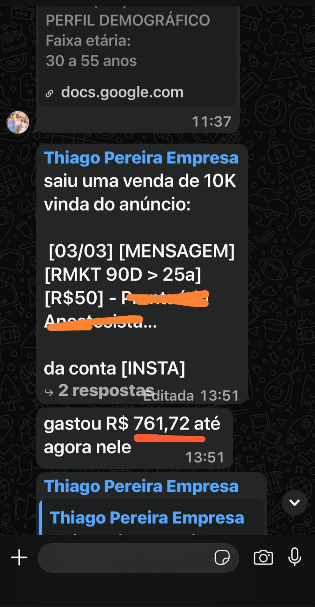
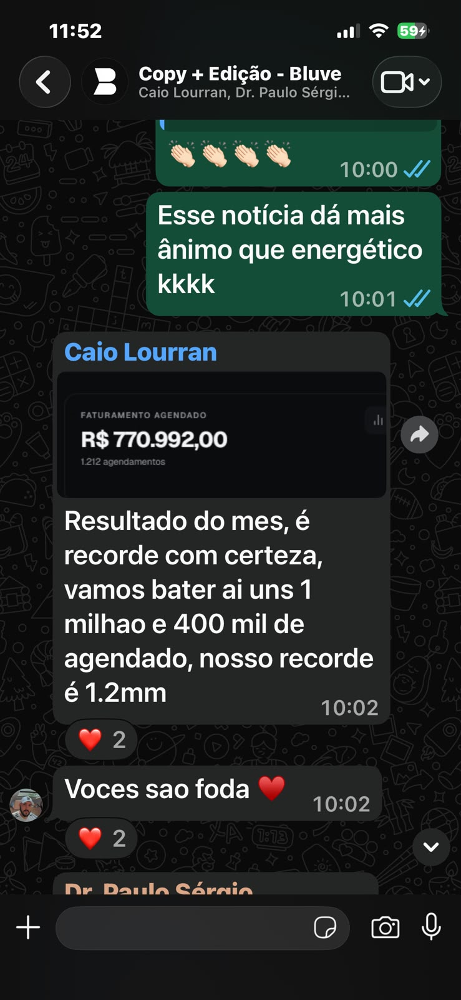

(O único problema quando esse plano começar a gerar resultado vai ser o volume de leads qualificados que vai chegar na sua base; você vai ter que aumentar o time comercial pra atender a todos)
Caro leitor 🙂
Você já é bom no que faz.
Não sei se você é mentor, consultor, dono de agência ou prestador de serviços.
Mas de uma coisa eu sei: você tem bagagem, tem case, fecha venda de R$3 mil, R$10 mil, R$30 mil quando o cara certo senta na sua frente.
O verdadeiro problema não está no funil… mas em quem chega até a call.
Sua agenda enche de reunião e o caixa não acompanha.
Você faz cinco diagnósticos na semana, sai de todos suado, e três eram curiosos sem dinheiro perguntando "quanto custa" pra sumir.
Você gasta R$10, R$15 mil por mês no Meta pra lotar a agenda de gente que nunca foi comprar nada.
Isso acaba hoje.
Eu escrevo anúncio de high ticket há tempo o bastante pra saber uma coisa que quase ninguém no seu mercado entende: o cliente caro não se conquista na call.
Você ganha ou perde ele na copy do anúncio, antes de ele clicar.
Desde que o Meta passou a ler o próprio criativo pra decidir pra quem entregar, quem escolhe o seu lead não é mais o interesse que você marcou no gerenciador.
O anúncio virou a porteira. Ele decide quem entra na sua agenda.
A maioria deixa a porteira escancarada e depois reclama do gado que entrou.
O que eu faço tem nome: Arquitetura do Criativo High Ticket.
Três pilares sobre uma base só.
Tudo assentado na Linguagem de Operação Madura: a forma de falar que funciona como ímã pro profissional de verdade e repelente pro iniciante que ia travar a sua agenda.
Metade é copy. A outra metade é formato e gancho.
Quem cuida só de uma das metades entrega anúncio que morre em três dias.
ajuste a porta da sua agenda pra impedir o lead curioso e quebrado de lotar ela.
Troca o gancho que atrai curioso por uma frase que o leigo não entende e o maduro reconhece como dele.
A agenda afina e engrossa de caixa ao mesmo tempo.
pare de medir o CPL e passe a medir custo por reunião qualificada que de fato aconteceu.
Você descobre que o funil tava certo. Era a frase dos 5 segundos que tava deixando o portão aberto.
nenhum prompt entrega uma estratégia completa de Teste, Validação e Escala, com roteiros de copy que fazem o melhor cliente do seu mercado ver em você a melhor chance dele solucionar o problema.
Toda vez que o seu custo por reunião sobe e bate aquele aperto de "lá vamos nós de novo", a porteira já tá calibrada.
O anúncio continua filtrando.
Entra quem tem caixa, some quem só queria saber o preço.
Você acorda, olha o direct com três conversas de gente pronta e volta a fazer o que você faz de melhor: fechar.
Minha proposta é muito simples: o que eu entrego é o lead qualificado chegando no seu funil de vendas todo dia.
E eu não trabalho com quem ainda acha que anúncio é despesa e vendedor é milagreiro.
Se você quer alguém que garanta no papel que vai te deixar rico, procura outro, porque esse alguém tá te vendendo mentira.
Isso aqui é pra quem já fatura, já roda tráfego e só quer parar de entupir a agenda de gente sem caixa.
Se é você, continua lendo.
A Renata Passos saiu de uma venda de R$3 mil pra R$12 mil por cliente. Eu acelerei em cerca de três meses a chegada dela no primeiro milhão.
Renata, a 5k de bater o primeiro milhão.Com o Dr. Thiago Pereira, em 2025, foi por volta de R$1 milhão em co-atribuição. Teve um post que virou R$10 mil com um anúncio de R$761 por trás.

Uma venda de R$10 mil vinda do anúncio, com R$761 de tráfego.Depois da copy, a Bluve bateu recorde de faturamento agendado: R$ 770 mil em agendamentos num mês, com leads muito mais qualificados.

Caio Lourran, da Bluve: "Resultado do mês, é recorde com certeza."E tem copy minha rodando há mais de cinco meses sem eu encostar, trazendo aluno todo dia pra escola do meu cliente. Anúncio que dura é anúncio que você não precisa refazer.
A porta da sua agenda tá na sua mão agora.
Você pode continuar trocando de funil toda vez que o custo sobe, ou pode me mandar uma mensagem e a gente lê junto por onde o curioso tá entrando.
Me chama no WhatsApp e me conta a sua oferta e quanto você gasta hoje no Meta.
Na conversa, eu te digo onde a porteira tá vazando e qual é o caminho certo pro seu caso.
Clica no botão, manda a mensagem e vamos calibrar a sua porteira.
Falar com o Netanias no WhatsApp